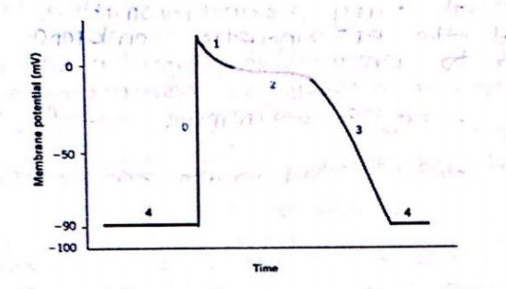

1. Direction of Transport: Endocytosis involves the internalization of extracellular materials (like nutrients or pathogens) by folding the membrane inward to form a vesicle. Exocytosis involves the fusion of internal vesicles with the plasma membrane to release contents (like hormones or neurotransmitters) to the outside.
2. Membrane Dynamics: Endocytosis removes a portion of the plasma membrane to form internal vesicles, whereas exocytosis adds vesicle membrane back to the plasma membrane, helping to maintain or increase the total surface area of the cell.
The All-or-None Law states that if a stimulus is strong enough to reach the threshold potential, an action potential of constant magnitude will be generated. If the stimulus does not reach the threshold, no action potential occurs at all. The intensity of the response does not increase with a stronger stimulus once threshold is met. Example: The firing of a single motor neuron or the contraction of a single muscle fiber.
1. Rapid Depolarization (Phase 0): Caused by the rapid influx of $Na^+$ ions through fast voltage-gated sodium channels.
2. Plateau Phase (Phase 2): Unique to cardiac muscle, caused by the slow influx of $Ca^{2+}$ ions through L-type calcium channels, balancing the $K^+$ efflux.
3. Repolarization (Phase 3): Caused by the closure of $Ca^{2+}$ channels and a rapid efflux of $K^+$ ions, restoring the negative resting potential.
4. Pacemaker Potential: In self-exciting cells (like the SA node), "funny" sodium currents ($I_f$) and $Ca^{2+}$ influx cause a slow spontaneous depolarization toward threshold.
A long absolute refractory period ensures that the heart muscle cannot undergo tetanus (sustained contraction). This is vital because it guarantees a period of relaxation (diastole) between contractions, allowing the ventricles to fill with blood before the next pump. Without this period, the heart would remain contracted and fail to circulate blood.
1. Calcium Binding Protein: In skeletal muscle, $Ca^{2+}$ binds to troponin C to move tropomyosin. In smooth muscle, $Ca^{2+}$ binds to calmodulin, which then activates Myosin Light Chain Kinase (MLCK).
2. Calcium Source: Skeletal muscle relies almost entirely on $Ca^{2+}$ released from the sarcoplasmic reticulum. Smooth muscle relies significantly on extracellular $Ca^{2+}$ entering through the plasma membrane (sarcolemma).
Nerve fibers are typically classified by;

This the action potential of a cardiac muscle tissue with phases from 0 - 4:
a) Increased ECF potassium (hyperkalemia) reduces the concentration gradient for K+, causing the resting membrane potential to become more positive (depolarization). While this initially brings the nerve closer to threshold, prolonged depolarization inactivates voltage-gated $Na^+$ channels, leading to a failure to generate action potentials and subsequent muscle paralysis or "weakness."
b) In Myasthenia Gravis, autoantibodies block, alter, or destroy nicotinic acetylcholine (ACh) receptors at the post-synaptic Neuromuscular Junction (NMJ). This reduces the end-plate potential (EPP) magnitude. If the EPP fails to reach threshold, the muscle fiber does not fire an action potential, resulting in progressive skeletal muscle weakness and fatigue.
c) Renshaw cells are inhibitory interneurons in the spinal cord that release glycine. They receive input from motor neuron collaterals and provide "recurrent inhibition" back to the same motor neuron. If Renshaw cells are inhibited (e.g., by strychnine), the motor neurons fire uncontrollably, leading to severe muscle spasms and tetanic contractions.
Osmolarity is the concentration of solute particles per Liter of solution (mOsm/L), while Osmolality is the concentration per Kilogram of solvent (mOsm/kg). Clinically, osmolality is preferred as it is independent of temperature. Tonicity refers to the effect a solution has on cell volume (swelling or shrinking) and depends only on non-penetrating solutes. Clinical Significance: These concepts guide IV fluid therapy; for example, hypertonic solutions are used to treat cerebral edema by drawing fluid out of brain cells.
The "breathing trouble" involves airway smooth muscle. During contraction: 1. $Ca^{2+}$ enters the cytosol from the ECF and Sarcoplasmic Reticulum. 2. $Ca^{2+}$ binds to Calmodulin. 3. This complex activates Myosin Light Chain Kinase (MLCK). 4. MLCK phosphorylates myosin heads, allowing them to bind to actin and initiate the power stroke. Epinephrine (the treatment) causes relaxation by increasing cAMP, which inhibits MLCK.
a) Regulatory Proteins: Tropomyosin blocks the myosin-binding sites on actin at rest; Troponin (C, I, and T) binds $Ca^{2+}$ to shift tropomyosin and allow contraction. Anchoring Proteins: Titin anchors thick filaments to Z-disks and provides elasticity; Alpha-actinin anchors actin filaments to the Z-disk.
b) 1. Isotonic: (e.g., 0.9% Normal Saline) to restore ECF volume without changing cell size. 2. Hypotonic: (e.g., 0.45% Saline) to treat cellular dehydration by moving water into cells. 3. Hypertonic: (e.g., 3% Saline) to draw water out of swollen cells or correct severe hyponatremia.
c) The Donnan Effect describes the unequal distribution of diffusible ions caused by the presence of non-diffusible, negatively charged proteins inside the cell. This creates an osmotic pressure that would normally cause the cell to swell and burst. It is corrected naturally by the $Na^+/K^+$ ATPase pump, which actively removes osmotic particles ($Na^+$) from the cell to maintain osmotic equilibrium and cell volume.